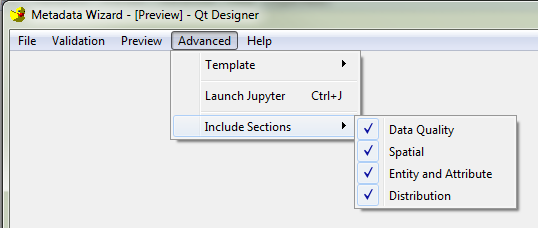

Include/Exclude Optional Metadata Sections¶
Some scenarios when creating metadata do not require the use of all available FGDC metadata sections, such as when creating a project-level metadata record, which can be used to summarize a collection of metadata records relating to a project.
Creating such a metadata record can be accomplished in Metadata Wizard by using the Include Sections feature. This feature is located on the Advanced menu.
These are reset to include all sections whenever a new record is opened.

The default is for all sections to be active, designated by a checkmark to the left of each section. To deactivate a section, click that section. The section’s checkmark will be removed, and the section’s tab in the main window of the tool will be blank.
Users should be advised that generally, all sections are required when creating metadata at the dataset level.